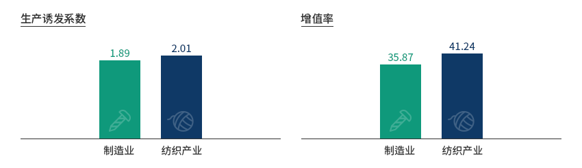
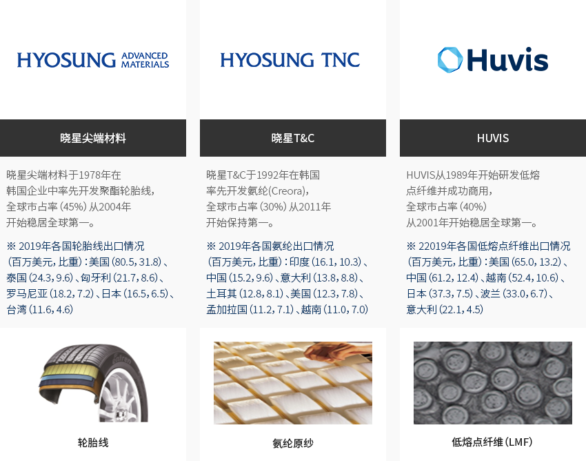
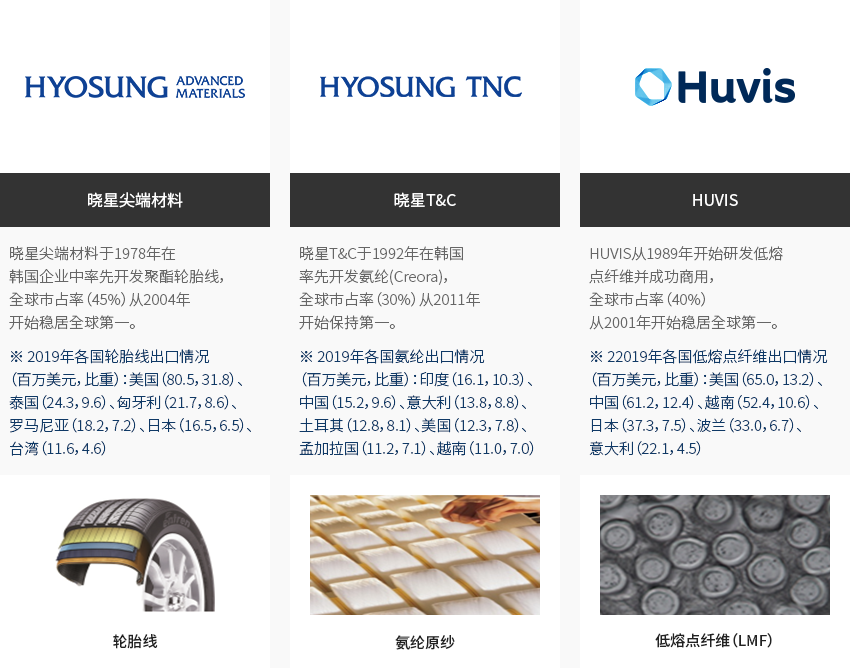
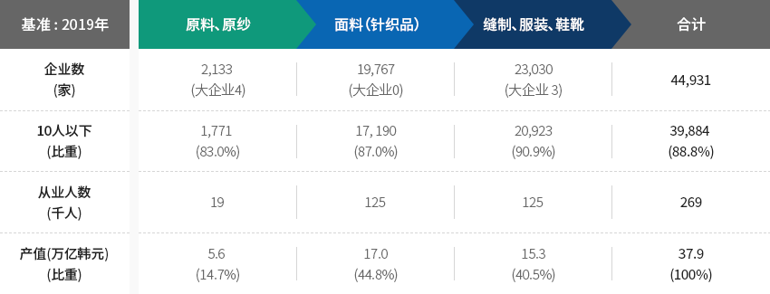
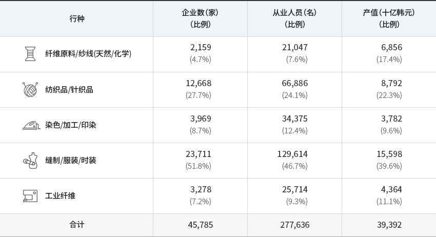
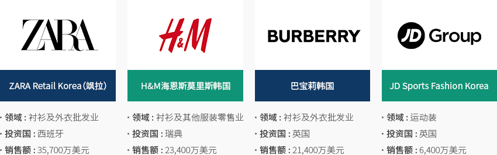
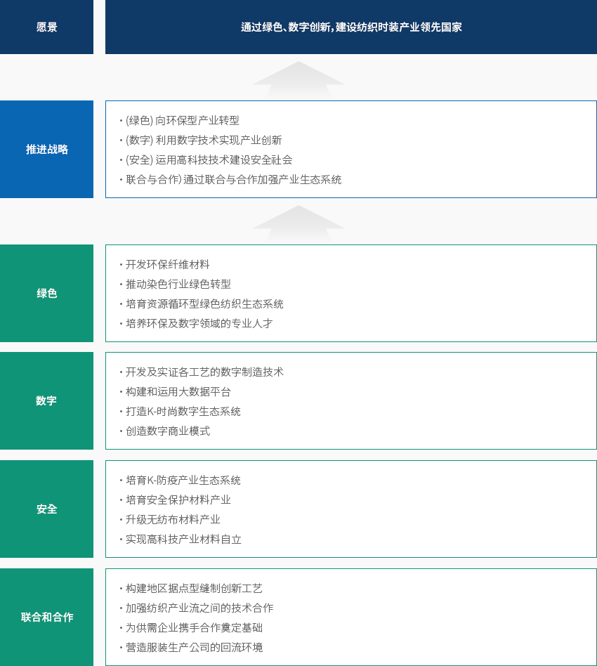
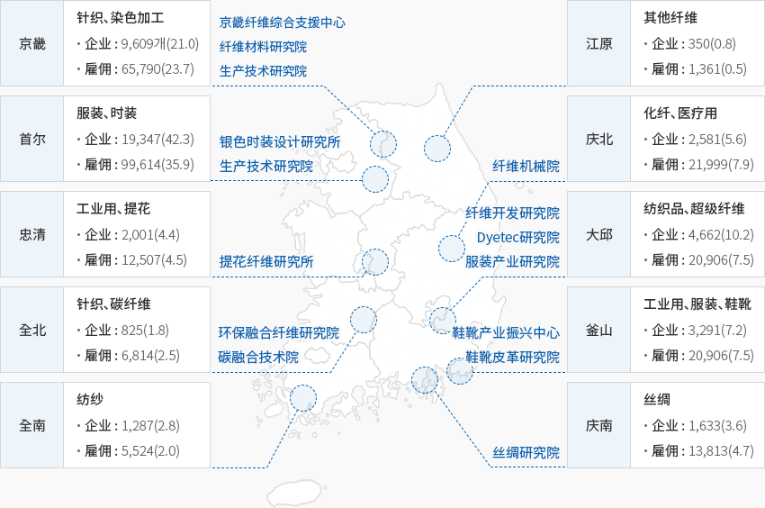

时装
- Home
- Why KOREA
- 产业
- 时装
-
不同产业相互融合 上下游对接效果巨大的高附加值产业 关闭内容不同产业相互融合 上下游对接效果巨大的高附加值产业韩国的纺织时装产业与其他产业、上下游产业相互对接，产生巨大效果。
纺织时装产业是一种附加值高且拉动就业的典型产业，生产诱致系数和增值率一般高于制造业，
就业诱发系数大于半导体一类核心产业。"纺织产业的波及效果"生产诱发系数- 制造业 - 1.89
- 纺织产业 - 2.01
增值率- 制造业 - 35.87
- 纺织产业 - 41.24
 ※ 资料来源：韩国统计厅、产业研究院主题产业现状(2020年12月)"韩国纺织类全球第一产品"
※ 资料来源：韩国统计厅、产业研究院主题产业现状(2020年12月)"韩国纺织类全球第一产品"- 晓星尖端材料 - (低熔点纤维（LMF）) 晓星尖端材料于1978年在韩国企业中率先开发聚酯轮胎线，全球市占率（45%）从2004年开始稳居全球第一。 ※ 2019年各国轮胎线出口情况（百万美元，比重）：美国（80.5，31.8）、泰国（24.3，9.6）、匈牙利（21.7，8.6）、罗马尼亚（18.2，7.2）、日本（16.5，6.5）、台湾（11.6，4.6）
- 晓星T&C - (氨纶原纱) 晓星T&C于1992年在韩国率先开发氨纶(Creora)，全球市占率（30%）从2011年开始保持第一。 ※ 2019年各国氨纶出口情况（百万美元，比重）：印度（16.1，10.3）、中国（15.2，9.6）、意大利（13.8，8.8）、土耳其（12.8，8.1）、美国（12.3，7.8）、孟加拉国（11.2，7.1）、越南（11.0，7.0）
- HUVIS - (LMF) HUVIS从1989年开始研发低熔点纤维并成功商用，全球市占率（40%）从2001年开始稳居全球第一。 ※ 2019年各国低熔点纤维出口情况（百万美元，比重）：美国（65.0，13.2）、中国（61.2，12.4）、越南（52.4，10.6）、日本（37.3，7.5）、波兰（33.0，6.7）、意大利（22.1，4.5）
-
国家支柱产业力量雄厚 具备坚实的生产基础 打开内容国家支柱产业力量雄厚 具备坚实的生产基础纺织时装产业是韩国的一大代表性支柱产业。2019年韩国纺织产业企业有44,931家，
在所有制造业企业中占比10.2%，雇佣人数为268,918人，占比为6.5%。如果包含相关产业在内，
则纺织产业企业有288,953家，雇佣人数为804,839人。- 大约90%企业为10人以下企业，而从结构来看，大型和中坚企业生产供应纺织原料，
中小企业采购这些原料并生产面料和服装。
"韩国纺织时装产业概况"韩国纺织时装产业概况 19年 企业数(家), 10人以下(比重), 从业人数(千人), 产值(万亿韩元)(比重) ‘19年 原料ㆍ原纱 面料（针织品） 缝制ㆍ服装ㆍ鞋靴 合计 企业数(家) 2,133 (大企业 4) 19,767(大企业 0) 23,030(大企业 3) 44,931 10人以下(比重) 1,771(83.0%) 17, 190(87.0%) 20,923(90.9%) 39,884(88.8%) 从业人数(千人) 19 125 125 269 产值(万亿韩元)(比重) 5.6(14.7%) 17.0(44.8%) 15.3(40.5%) 37.9(100%)
※ 企业数、从业人数：韩国统计厅全国企业调查（1人以上）/产值：统计厅矿业制造业调查（10人以上）此外，过去43年间（1977年～2019年）纺织时装产业贸易收支顺差高达3047亿美元，既是带动韩国经济发展的支柱产业，
又是拉动其他产业发展的母体产业。自1987年率先以产业为单位出口100亿美元以来，
到2001年纺织时装产业每年都实现超过100亿美元的顺差。同时，如果算上批发和零售业等相关产业，则从业人数达到83万人，
让纺织时装产业成为一个拉动就业且附加值高的典型产业。纺织时装产业通过扩大生产和投资发展壮大，创造新的工作岗位，最终拉动就业。"韩国纺织类进出口变化趋势"韩国纺织类进出口变化趋势 分类, 年度 ※ 资料来源 : 韩国贸易协会 - 大约90%企业为10人以下企业，而从结构来看，大型和中坚企业生产供应纺织原料，
-
韩国纺织时装产业的 产业结构 打开内容韩国纺织时装产业的 产业结构韩国的纺织时装产业从上游（纤维原料/纤维原纱）到中游（纺织品及染色加工等），再到下游（服装、其他纤维产品），
呈现出生产工厂细化的结构。从产值来看，缝制/服装/时装领域占总产值的40%左右，
纺织品/针织品（22.3%）及纤维原料/原纱（17.4%）紧随其后。"韩国纺织时装产业的产业结构"(基准 : 2018年)韩国纺织时装产业的产业结构 业种, 企业数（家）（比重）, 从业人数（名）（比重）, 产值（十亿韩元）（比重） 业种 企业数（家）
（比重）从业人数（名）
（比重）产值（十亿韩元）
（比重）纤维原料/原纱(天然/化学) 2,159
(4.7%)21,047
(7.6%)6,856
(17.4%)纺织品/针织品 12,668
(27.7%)66,886
(24.1%)8,792
(22.3%)染色/加工/印染 3,969
(8.7%)34,375
(12.4%)3,782
(9.6%)缝制/服装/时装 23,711
(51.8%)129,614
(46.7%)15,598
(39.6%)工业纤维 3,278
(7.2%)25,714
(9.3%)4,364
(11.1%)合计 45,785 277,636 39,392
※ 资料来源：统计厅 -
国际时尚品牌 积极进军韩国市场 打开内容国际时尚品牌 积极进军韩国市场海外跨国时装企业瞄准韩国消费者和中国消费者，积极进军韩国市场。
相较于服装生产，外商投资更集中于全球时装品牌的分销流通领域。例如，ZARA、
H&M等全球SPA品牌以合作投资形式投资韩国。(基准 : 2019年)-
ZARA Retail Korea（飒拉）
- 领域 : 衬衫及外衣批发业
- 投资国 : 西班牙
- 销售额 : 35,700万美元
-
H&M海恩斯莫里斯韩国
- 领域 : 衬衫及其他服装零售业
- 投资国 : 瑞典
- 销售额 : 23,400万美元
-
巴宝莉韩国
- 领域 : 衬衫及外衣批发业
- 投资国 : 英国
- 销售额 : 21,400万美元
-
JD Sports Fashion Korea
- 领域 : 运动装
- 投资国 : 英国
- 销售额 : 6,400万美元
※ 资料来源：产业通商资源部、金融监督院电子披露系统 -
ZARA Retail Korea（飒拉）
-
通过数字转型 实现产业结构升级 打开内容通过数字转型 实现产业结构升级2020年11月迎来第34届“纺织之日”，韩国政府发布《纺织时装产业韩国版新政实施战略》，
决定到2025年投入160万亿资金（含114.1万亿韩元的国家经费），创造190.1万个工作岗位，
以积极应对环境变化——发达国家技术差距拉大和发展中国家奋起追赶的前后夹击（Nut-Cracker）局面、
GVC重组、数字转型等，并将其充分利用为二次腾飞的机遇。"新政实施推进战略"愿景 - 通过绿色、数字创新，建设纺织时装产业领先国家推进战略- (绿色) 向环保型产业转型
- (数字) 利用数字技术实现产业创新
- (安全) 运用高科技技术建设安全社会
- （联合与合作）通过联合与合作加强产业生态系统
绿色- 开发环保纤维材料
- 推动染色行业绿色转型
- 培育资源循环型绿色纺织生态系统
- 培养环保及数字领域的专业人才
数字- 开发及实证各工艺的数字制造技术
- 构建和运用大数据平台
- 打造K-时尚数字生态系统
- 创造数字商业模式
安全- 培育K-防疫产业生态系统
- 培育安全保护材料产业
- 升级无纺布材料产业
- 实现高科技产业材料自立
联合和合作- 构建地区据点型缝制创新工艺
- 加强纺织产业流之间的技术合作
- 为供需企业携手合作奠定基础
- 营造服装生产公司的回流环境
-
生产网络便于开展 跨地区和行业合作 打开内容生产网络便于开展 跨地区和行业合作纺织时装产业正在按地区产地构建各具特色的纺织产业结构，通过盘活产学研集群和按地区发展特色品种，
如此一来不仅可以促进地区经济，还可以跨行业和地区合作共赢，谋求产业结构升级。- 首尔、京畿 : 通过建立智能工厂实现数字转型，培育IT融合纺织、针织编织、染色加工领域
- 大邱、庆北 : 培育用于高科技产业的纤维领域，通过ICT对接响应未来市场，实现环保产业转型
- 釜山、庆南 : 해海洋融复合材料的高附加值化、融合缝制加工-ICT，开发危机应对型特殊工作软件(防疫物品、军装)
- 忠清、全罗 : 通过IT融合制造创新提高生产效率，促进安全保护产品等技术融合型工业纤维的开发
"各地区特色纺织产品与纺织时装产业相关企业及从业人数"(基准 : 2019年)-
京畿: 针织、染色加工(京畿纤维综合支援中心, 纤维材料研究院, 生产技术研究院)
- 企业: 9,680家(21.0)
- 雇佣: 65,790人(23.7)
-
江原: 其他纤维
- 企业: 350家(0.8)
- 雇佣: 1,361人(0.5)
-
首尔: 服装、时装(银色时装设计研究所, 生产技术研究院)
- 企业: 19,347家(42.3)
- 雇佣: 99,614人(35.9)
-
庆北: 化纤、医疗用(纤维机械院)
- 企业: 2,581家(5.6)
- 雇佣: 21,999人(7.9)
-
忠清: 工业用、提花(提花纤维研究所)
- 企业: 2,001家(4.4)
- 雇佣 : 12,507人(4.5)
-
纤维机械院: 纺织品、超级纤维(纤维开发研究院, Dyetec研究院, 服装产业研究院)
- 企业: 4,662(10.2)
- 雇佣: 20,906人(7.5)
-
全北: 针织、碳纤维(环保融合纤维研究院, 碳融合技术院)
- 企业: 825家(1.8)
- 雇佣: 6,814人(2.5)
-
釜山: 工业用、服装、鞋靴(鞋靴产业振兴中心, 鞋靴皮革研究院)
- 企业: 3,291家(7.2)
- 雇佣: 20,906人(7.5)
-
全南: 纺纱
- 企业: 1,287家(2.8)
- 雇佣: 6,814人(2.5)
-
庆南: 丝绸(丝绸研究院)
- 企业: 1,633(3.6)
- 雇佣: 12,813人(4.7)
※ 资料来源：统计厅《国家统计门户网站》全国企业调查（1人以上企业调查资料）
※ 备注：特色生产纤维、企业（企业数）、雇佣（从业人数）
※ 资料协助：韩国纤维产业联合会


Invest KOREA
食品/时装/美妆项目经理
鄭寶英
基干产业引进组
T.+82-2-3460-7888
选址信息推荐
产业园区信息
[Daegu Metropolitan City Seo-gu] Daegu Dyeing General Industrial Complex
(Regeneration Business District)
Click [Go to Detailed Information] to go to the relevant information screen of
Smart K-Factory service of Industrial Complex Corporation.
-
Complex nameDaegu Dyeing General Industrial Complex (Regeneration Business District)
-
Initial designation date1980.11.28
-
Designated area(m2)849,648
-
ManagementDaegu Dyeing Industrial Corporation
-
Nearby RailwaySeodaegu Station
-
Distance from station(km)2
-
Nearby AirportDaegu International Airport
-
Distance from airport(km)10
-
Industrial water Supply capacity(ton/day)120(㎥/day)
-
Affiliation local governmentDaegu Metropolitan City Seo-gu
-
Population2,428,228
产业园区信息
[Gyeongsangbuk-do Yeongju City] Ban-gu Specialized Agricultural Industrial
Complex
Click [Go to Detailed Information] to go to the relevant information screen of
Smart K-Factory service of Industrial Complex Corporation.
-
Complex nameBan-gu Specialized Agricultural Industrial Complex
-
Initial designation date2010.08.03
-
Designated area(m2)299,354
-
ManagementGyeongsangbuk-do Yeongju City
-
Nearby RailwayYeongju Station
-
Distance from station(km)9
-
Nearby AirportWonju Airport
-
Distance from airport(km)115
-
Industrial water Supply capacity(ton/day)10(㎥/day)
-
Affiliation local governmentGyeongsangbuk-do Yeongju City
-
Population103,652
产业园区信息
[Gyeongsangbuk-do Gyeongsan City] Gyeongsan 1st General Industrial
Complex
Click [Go to Detailed Information] to go to the relevant information screen of
Smart K-Factory service of Industrial Complex Corporation.
-
Complex nameGyeongsan 1st General Industrial Complex
-
Initial designation date1990.12.10
-
Designated area(m2)1,577,414
-
ManagementGyeongsan Industrial Complex Corportation
-
Nearby RailwayGyeongsan Station
-
Distance from station(km)15
-
Nearby AirportDaegu International Airport
-
Distance from airport(km)24
-
Industrial water Supply capacity(ton/day)7000(㎥/day)
-
Affiliation local governmentGyeongsangbuk-do Gyeongsan City
-
Population262,300
产业园区信息
[Gyeonggi-do Yangju City] Hongjuk General Industrial Complex
Click [Go to Detailed Information] to go to the relevant information screen of
Smart K-Factory service of Industrial Complex Corporation.
-
Complex nameHongjuk General Industrial Complex
-
Initial designation date2008.03.25
-
Designated area(m2)585,700
-
ManagementKorea Industrial Complex Corporation
-
Nearby RailwayDongducheon Station
-
Distance from station(km)21
-
Nearby AirportGimpo International Airport
-
Distance from airport(km)43
-
Industrial water Supply capacity(ton/day)3137(㎥/day)
-
Affiliation local governmentGyeonggi-do Yangju City
-
Population229,052
产业园区信息
[Daegu Metropolitan City Seo-gu] Seodaegu Industrial Complex (Renewable
Zone)
Click [Go to Detailed Information] to go to the relevant information screen of
Smart K-Factory service of Industrial Complex Corporation.
-
Complex nameSeodaegu Industrial Complex (Renewable Zone)
-
Initial designation date2013.12.30
-
Designated area(m2)2,661,821
-
ManagementSeodaegu Industrial Complex Association
-
Nearby RailwaySeodaegu Station
-
Distance from station(km)3
-
Nearby AirportDaegu International Airport
-
Distance from airport(km)20
-
Industrial water Supply capacity(ton/day)18807(㎥/day)
-
Affiliation local governmentDaegu Metropolitan City Seo-gu
-
Population2,428,228
产业园区信息
[Gyeonggi-do Dongducheon City] Sangbong-am General Industrial
Complex
Click [Go to Detailed Information] to go to the relevant information screen of
Smart K-Factory service of Industrial Complex Corporation.
-
Complex nameSangbong-am General Industrial Complex
-
Initial designation date1995.02.14
-
Designated area(m2)54,522
-
ManagementGyeonggi-do Dongducheon City
-
Nearby RailwayDongducheon Station
-
Distance from station(km)2
-
Nearby AirportGimpo International Airport
-
Distance from airport(km)76
-
Industrial water Supply capacity(ton/day)100(㎥/day)
-
Affiliation local governmentGyeonggi-do Dongducheon City
-
Population93,968